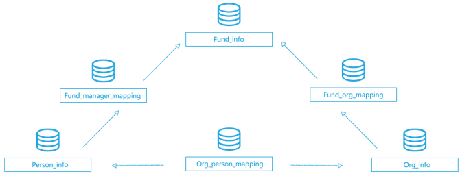

中国私募证券投资基金数据库(CHFDB)包含基金产品信息库、投顾公司信息库与投资经理信息库。
目前CHFDB最早的私募数据可追溯到2003年，覆盖了通过私募公司发行的产品、信托平台发行的
私募产品、商券集合理财产品、公募基金一对多专户理财产品、期货资管发行的产品及单账户证券等基金产品信息。
中国私募证券投资基金数据库
申请试用
截止：2018 - 4 - 17
--
 公募产品
公募产品
--
基金公司
--
基金经理
数据库结构

公募基金数据总计58张表
-
基本信息类数据
fund_info(基金信息表)
包括基金名称、成立事件、申购状态等基本信息。
org_info（机构信息表）
包括机构名称、机构类型、成立日期、地址等基本信息。
person_info（人员信息表）
包括姓名、性别、学历等人员基本信息。
manager_info（经理人信息表）
包含姓名、性别、学历、在管基金、投资年限等基金经理基本信息。
executive_info（高管信息表）
包含姓名、性别、学历、所在机构等高管基本信息。
-
延伸信息类数据
fund_info_subsidiary（基金附属信息表）
包含基金预警线、止损线、发行规模等基金附属信息。
fund_fee_data（基金费率表）
包含基金最低认购金额、最低追加金额、费用类型、费率等基金费用类信息。
fund_portfolio（母子基金关系表）
包含分级型、组合型等基金的母子基金关系信息。
fund_security_data（基金股票持仓表）
包含部分资产管理计划的具体持股标的、规模、比例等信息。
org_integrity（机构诚信信息表）
包括机构异常信息。
person_description（人员简历表）
包含人名、简历等信息。
market_info（市场概况表）
包含私募基金数量、规模等行业数据。
-
基金净值&分类
fund_nv_data_source（多源净值表）
包括从不同信源获取的净值数据。
fund_nv_data_standard（标准净值表）
经私募云通校验及优选的净值数据。
fund_nv_standard_m（月频化净值表）
经过私募云通校验、优选且对齐到月末的月频净值数据。
fund_nv_standard_w（周频化净值表）
经过私募云通校验、优选且对齐到每周五的周频净值数据。
fund_allocation_data（基金分红拆分表）
包含基金税后红利、拆分比例等基金分红信息。
-
指数类数据
market_index（市场行情指数表）
包含沪深300、中债指数、上证50等市场指数信息。
fund_week_index（私募周频指数表）
私募云通所编制的13个策略指数的周频指数
fund_month_index（私募月频指数表）
私募云通所编制的13个策略指数的月频指数。
org_weekly_index（机构周频指数表）
包含机构周频综合指数、分策略指数等信息。
org_monthly_index（机构月频指数表）
包含机构月频综合指数、分策略指数等信息。
-
衍生指标（基金）
fund_week_return（基金周频收益指标表）
包含基金周度的收益类指标信息。
fund_week_risk（基金周频风险指标表）
包含基金周频的风险类指标信息。
fund_subsidiary_weekly_index(基金周频其他指标表)
包含基金周频的其他指标，如上行捕获率、痛苦比率等。
fund_month_return（基金月频收益指标表）
包含基金月度的收益类指标信息。
fund_month_risk（基金月频风险指标表）
包含基金月频的风险类指标信息。
fund_subsidiary_month_index(基金月频其他指标表)
包含基金月频的其他指标，如上行捕获率、痛苦比率等。
-
基金关系表
fund_manager_mapping（基金与经理人关系表）
包含基金与历任管理基金的基金经理信息。
fund_org_mapping（基金与机构关联）
包含基金与管理机构、托管机构、顾问管理机构的关系信息。
org_person_mapping（人员与机构关联）
包含人员与机构任职信息，如职位、职责等等。
-
分类数据
fund_type_mapping（基金分类表）
包含基金按策略、按运行状态、是否结构化等不同维度的分类信息。
-
衍生指标(行情指数)
index_daily_return（指数日频收益指标表）
包含指数日频的收益类指标信息。
index_daily_risk（指数日频风险指标表）
包含指数日频风险类指标信息。
index_daily_subsidiary（指数日频其他指标表）
包含指数日频的其他指标信息，如连续上涨周数、连续下跌周数。
index_weekly_return（指数周频收益指标表）
包含指数周频的收益类指标信息。
index_weekly_risk（指数周频风险指标表）
包含指数月频风险类指标信息。
index_weekly_subsidiary（指数周频其他指标表）
包含指数周频的其他指标信息，如连续上涨周数、连续下跌周数。
index_monthly_return（指数月频收益指标表）
包含指数月频的收益类指标信息。
index_monthly_risk（指数月频风险指标表）
包含指数月频风险类指标信息。
index_monthly_subsidiary（指数月频其他指标表）
包含指数月频的其他指标信息，如连续上涨周数、连续下跌周数
-
规模, 时序类数据
fund_asset_scale（基金规模时序表）
包含基金时间序列上的规模信息。
org_asset_scale（机构规模时序表）
机构时间序列上的规模信息。
org_timeseries（机构其他数据时序表）
包含机构员工数量、实缴资本、注册资本等信息。
-
衍生指标（机构）
org_monthly_research（机构投研能力指标表）
包含机构月度投研能力指标，如择时能力、选股能力等。
org_monthly_return（机构收益指标表）
包含机构月度收益类指标信息。
org_monthly_risk（机构风险指标表）
包含机构月度风险类指标信息。